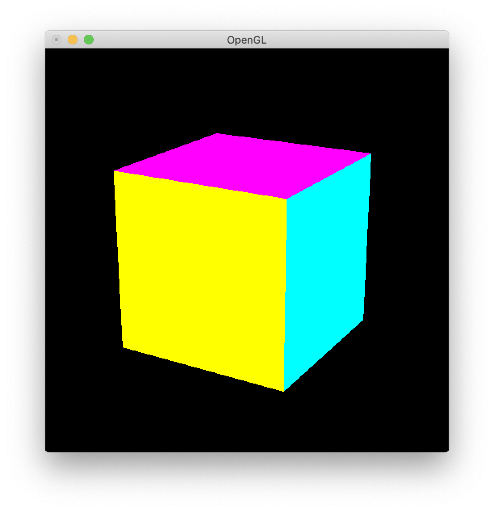
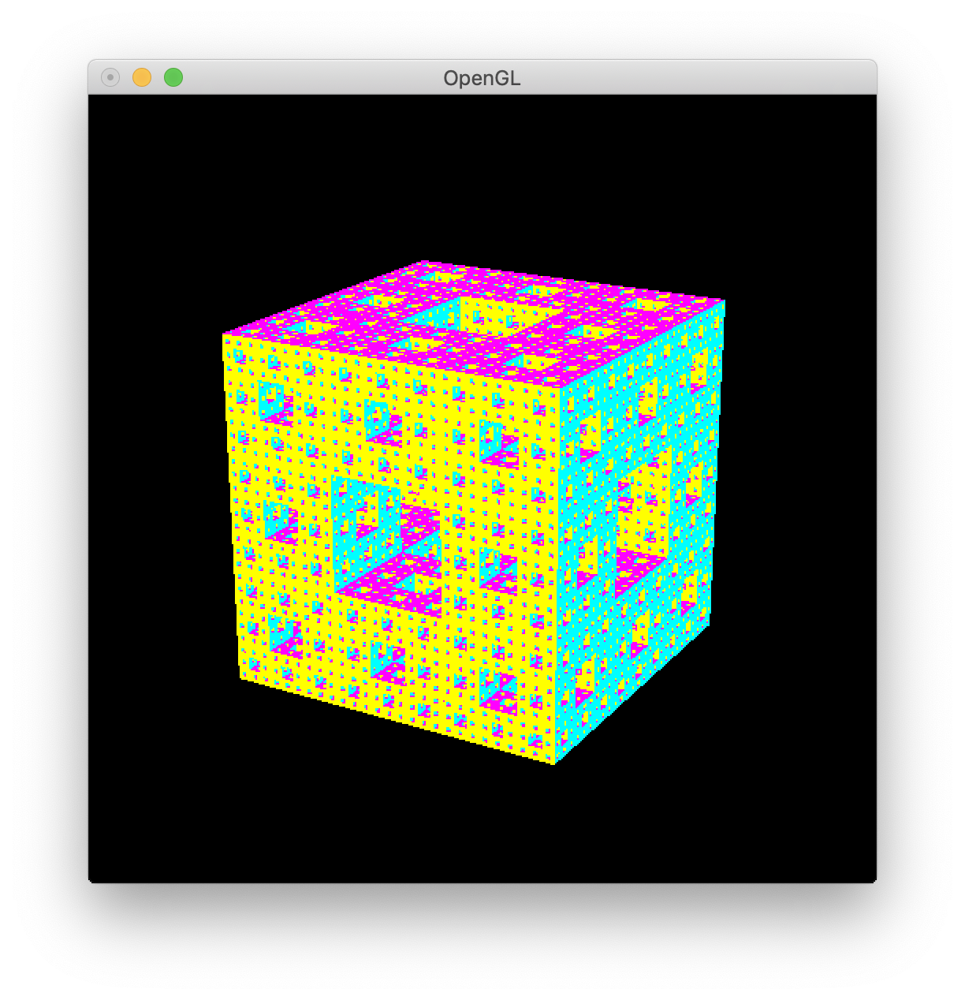
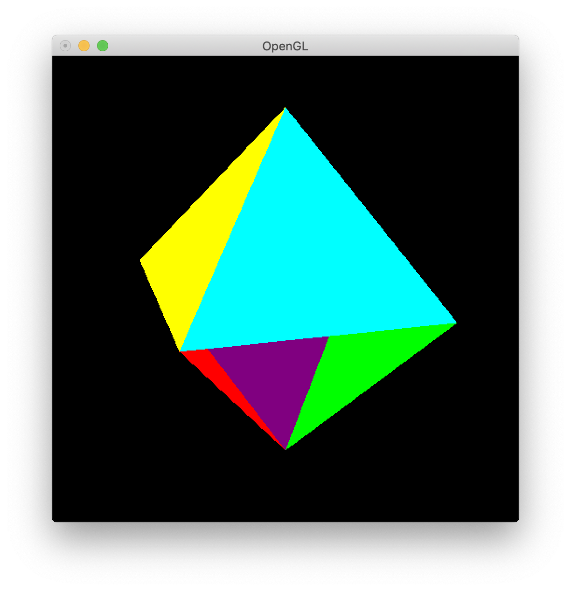

| 氏名 | 林橘平 |
|---|---|
| クラス | 総合情報学コース3年 |
| 学生証番号 | 08-192025 |
例題のため略
(base) MBP:Chap12 hayashikippei$ python3 cube.py FOV / near far / rotX rotY rotZ/ [] ->

Polyhedronを継承したCubeクラスを定義した。initで頂点座標値vertices、各面の頂点番号列faces、各稜線の頂点番号列edges、各面の描画色colorsを定めた。 そして、Polyhedronで定義したdisplay()を用いて正多面体を描画する。displayでは、facesについてfor文で繰り返しを行う。 まずcolorsから色を指定し、glVertex3dvにverticesから頂点座標値を与えることで多角形を描画して各面を描画する。 結果を見ても、正しく正六面体が描画できている。
例題のため略
(base) MBP:Chap12 hayashikippei$ python3 mengerSponge.py times [FOV / near far / rotX rotY rotZ] -> 4

フラクタル立体を継承したMengerSpongeクラスを定義した。各頂点を原点から (1 - 1/3)倍の位置に平行移動させ、各稜線を、原点から各稜線の中点までの(1 - 1/3)倍の位置に平行移動 させるベクトルをvecsにforで繰り返して格納していく。 ハウスドルフ次元はlog20 / log3 = 2.73 2より高く3より小さいため面積は無限大に発散し、体積は0に収束する。
from myGLCanvas import MyGLCanvas, getArgs # myGLCanvasモジュールのimport
from polyhedron import Polyhedron # polyhedronモジュールのimport
import math
class Octahedron(Polyhedron): # Cubeクラスの定義
def __init__(self): # 初期化メソッド
'''
立方体を初期化する
'''
super().__init__( # Polyhedronクラスの初期化メソッド
((math.sqrt(3), 0, 0), (-math.sqrt(3), 0, 0), (0, math.sqrt(3), 0), (0, -math.sqrt(3), 0),
(0, 0, math.sqrt(3)), (0, 0, -math.sqrt(3))), # 頂点座標値
((0, 2, 4),(0, 3, 4) ,(4, 2, 1), (4, 3, 1),
(1, 2, 5), (1, 3, 5), (5, 2, 0), (5, 3, 0)), # 各面の頂点番号列
((0, 1), (1, 2), (2, 3), (3, 0), (0, 4), (1, 5),
(2, 6), (3, 7), (4, 5), (5, 6), (6, 7), (7, 4)), # 各稜線の頂点番号列
(( 0, 1, 1), ( 1, 0, 1), ( 1, 1, 0), (1, 0, 0),
( 0, 0.5, 0.5), (0.5, 0, 0.5), (0.5, 0.5, 0), (0, 1, 0)) ) # 各面の描画色
def main(): # main関数
dispObj = Octahedron() # Cubeオブジェクトの作成
canvas = MyGLCanvas() # MyGLCanvasの作成
canvas.init(dispObj) # OpenGLの初期化
canvas.argsInit(getArgs()) # シェル引数/キーボード入力による文字列の取得
canvas.loop() # コールバックメソッドの設定とループ起動
if __name__ == '__main__': # 起動の確認 (コマンドラインからの起動)
main() # main関数の呼出
(base) MBP:Chap12 hayashikippei$ python3 octahedron.py FOV / near far / rotX rotY rotZ/ [] ->

Cubeの時と同様にPolyhedronクラスを継承して、vertices, faces, edges,colorsを正八面体のものに書き換えた。 実行結果を見ると、下半分の表示に違和感を感じた。そもそもdisplay()の問題なのか、vertices, facesに与える座標と頂点番号の 順番がおかしいのかどちらかの原因が考えられる。
3時間
フラクタル立体が描けない